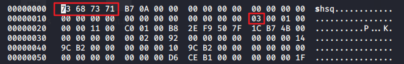
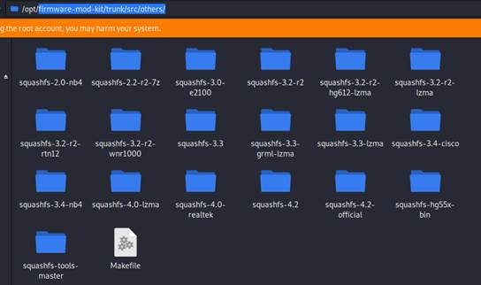
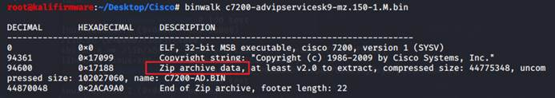
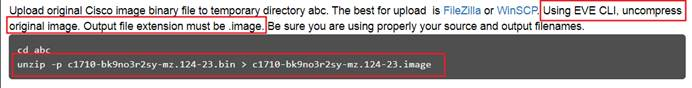

固件解包小结
条评论Squashfs 文件系统
该文件系统，注意是依据头部的Magic值来识别。常见的有：sqsh，hsqs，qshs，shsq，hsqt，tqsh，sqlz 7种。
根据头部偏移第25个byte位置的值，来确定压缩的版本。
举例：

上图就是一个Magic值为 shsq 的压缩文件系统。压缩的版本号是：03（第二个红框位置）。
解压缩方法
- Binwalk
常规方法就是使用工具binwalk。使用命令：binwalk –Me xxx.bin
但是这个方法缺陷在于，如果binwalk识别不出来文件系统，就无法解压。并且，binwalk解压能解压的版本，依赖的binwalk自带的squashfs工具版本。
- Firmware-mod-kit
下载 https://github.com/rampageX/firmware-mod-kit
使用这个工具，在目录：/firmware-mod-kit/trunk/src/others/ 下，有多个版本的squashfs解压工具。如下图。

这里面有各种不同的版本，使用这个工具基本能解压出所有常见的squshfs文件系统。
但是需要注意的是，在解压的时候，要先从原始Bin文件中分离出squshfs的部分，在进行解压。
Cramfs
这种文件系统，头部Magic值是 0x28cd3d45。不确定大端小端的情况下，也可能是反过来的。解压放法还是使用Binwalk。目前，还没有遇到该文件系统的固件包。
ELF封装
有些bin文件，分析发现是ELF封装的。如下图。

还可以看到里面的数据用 Zip 压缩存放，有个名为C7200-AD.bin。
这种bin是用来做dynamips镜像文件的。根据EVE-NG的官方说明，如下图。

使用命令： unzip –p xxx.bin > xxx.image
就可以把bin转换为dynamips可用的image。